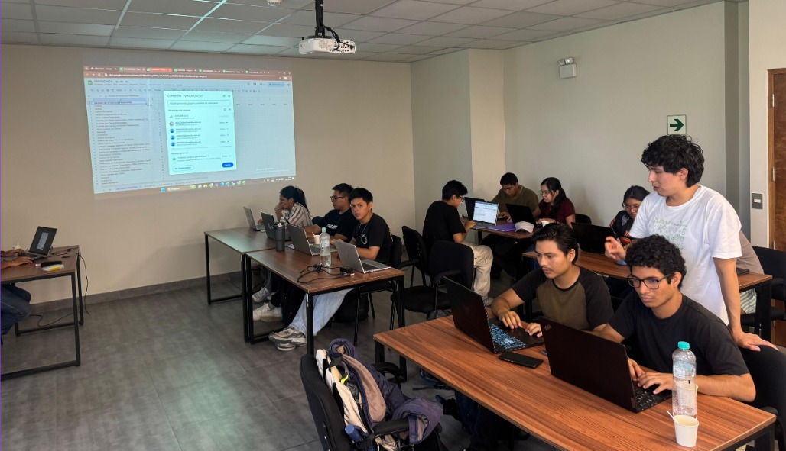

IMPULSANDO LA INVESTIGACIÓN
que transforma las finanzas
Somos el Semillero de Investigación de la Universidad Nacional Agraria La Molina que promueve el análisis financiero, la innovación y el desarrollo sostenible mediante la investigación aplicada.
Conoce AFINLAB
Estudiantes de la Universidad Nacional Agraria La Molina, pertenecientes a las carreras de Ingeniería en Gestión Empresarial, Economía, Estadística Informática y todas aquellas interesadas en la gestión financiera sostenible.

Misión
Impulsar el análisis financiero y la toma de decisiones estratégicas
Visión
Liderar la investigación y las finanzas aplicadas con impacto en el desarrollo económico.
Propósito
Mejorar la calidad de toma de decisiones financieras de los principales sectores económicos del Perú.
Línea de investigación
Gestión de las Organizaciones, mejorando su toma de decisiones financieras y estratégicas.